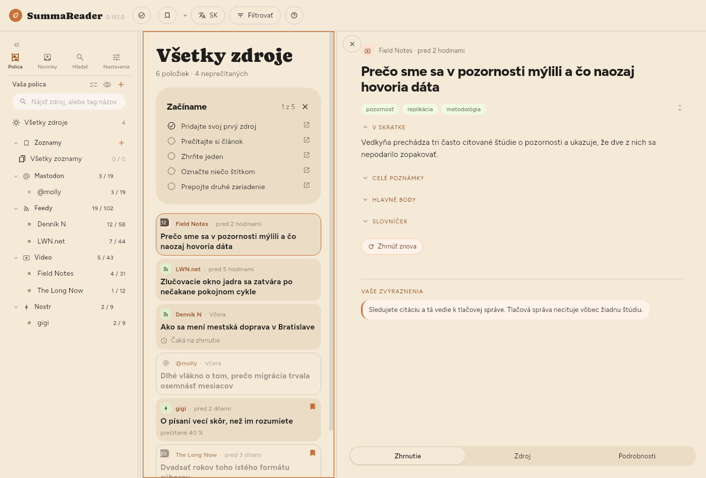

← Okno · Obsah · Zhrnutia →
Čítanie
Kliknite na článok alebo stlačte ↵. Podľa okna a rozloženia vybraného v Nastavenia › Základné › Navigácia › Panely a polica › Rozloženie sa otvorí vedľa zoznamu, nad ním alebo pod ním, alebo zaberie celé okno. V telefóne vždy zaberie celú obrazovku.

Tri karty
- Zhrnutie — to, čo napísal model, v troch rozbaľovacích sekciách: V skratke (tri vety), Hlavné body (jeden na každú tému, každý s názvom a pár vetami vysvetlenia) a Slovníček (pojmy, ktoré model považoval za vhodné vysvetliť). Body z videa majú časové značky, ktoré preskočia na dané miesto.
Shift+1–3ich zbalia. - Zdroj — samotný článok alebo prepis.
- Podrobnosti — odkiaľ článok pochádza, kedy, ktorý model ho zhrnul a koľko to stálo.
1–3 medzi nimi prepínajú.
Zhrnutia napísané predtým, ako ich aplikácia prestala žiadať, majú aj Celé poznámky, dlhšiu verziu v súvislom texte. Dnes už ich nič nevytvára: ich úlohu prevzal prehľad a vysvetlenia pod každou témou.
Panel nástrojov
- Uložiť — zaradí článok do zoznamu, ktorý je na polici vyplnený; kým nevyberiete iný, je to Uložené. ▾ vedľa neho, kliknutie pravým tlačidlom alebo podržanie vyberie iný zoznam alebo vytvorí nový.
- Označiť prečítané — pri článkoch z kanála. So zapnutým filtrom neprečítaných vás to presunie na ďalší; posledný čítačku zatvorí.
- Odstrániť — iba pri článkoch, ktoré ste si uložili. Pýta sa dvakrát a pri druhom stlačení píše Odstrániť všade?, pretože článok odstráni zo všetkých zariadení, s ktorými synchronizujete, a zabráni tomu, aby ho niektorý kanál priniesol späť.
Prechod medzi článkami
Potiahnite článok do strany alebo použite j / k, alebo medzerník na konci článku. Potiahnutie doprava pri prvom článku vás vráti do zoznamu. Na telefóne alebo v úzkom okne vás potiahnutie od ľavého okraja vráti do zoznamu a potiahnutie od pravého okraja otvorí webovú stránku. Potiahnutie za koniec alebo za začiatok článku nerobí nič, kým mu nevyberiete akciu.
Potiahnutie vykoná akciu, až keď pustíte prst. Keď je potiahnutie dosť dlhé, krátka nápoveda ukáže akciu. Ak sa pred pustením vrátite, nestane sa nič. Ďalší článok sa potom vysunie zdola a predchádzajúci zhora. Rovnako sa článok posunie s j a k. Na dotykovej obrazovke sa pri potiahnutí k nasledujúcemu alebo predchádzajúcemu článku tento článok posúva dnu za vaším prstom. Keď je potiahnutie dosť dlhé, ukáže sa nad ním nápoveda a ak prst pustíte príliš skoro, článok sa vráti späť.
Pri poslednom článku v zozname vás potiahnutie do strany alebo potiahnutie k nasledujúcemu článku označí článok ako prečítaný a vráti do zoznamu. Správa vám povie, že to bol posledný článok, a pri potiahnutí to hovorí aj nápoveda. Pri poslednom článku stránky obe otvoria prvý článok ďalšej stránky.
Ako ďaleko musíte potiahnuť, kým pustenie vykoná akciu, nastavíte voľbou Krátka, Stredná alebo Dlhá v Nastavenia › Základné › Navigácia › Gestá › Dĺžka potiahnutia. Sú to tretina, polovica a tri štvrtiny výšky článku. Predvolená je Dlhá. Rýchle švihnutie vykoná akciu na akúkoľvek vzdialenosť.
Každému z týchto šiestich giest môžete dať inú akciu, napríklad Označiť ako prečítané / neprečítané alebo Označiť ako prečítané a otvoriť ďalší. Vyberiete ich v Nastavenia › Základné › Navigácia › Gestá › Gestá v článku. Potiahnutie položky zoznamu je v Nastavenia › Základné › Navigácia › Gestá.
V telefóne alebo tablete potiahnite zoznam nadol, aby ste ho obnovili alebo skontrolovali zdroje. Aplikácia sa opýta: Obnoviť zoznam alebo Skontrolovať nové články. Ak chcete jedno z nich bez otázky, vyberte ho v Nastavenia › Základné › Navigácia › Gestá › Potiahnutie zoznamu nadol.
Posúvanie
Kliknutie myšou odovzdá klávesy panelu, na ktorý kliknete. Kliknutie na článok v zozname ho otvorí a nechá klávesy v zozname, takže ↓ a ↑ pokračujú v chôdzi od tohto článku. Ak chcete článok posúvať klávesmi, kliknite do článku. Ťuknutie prstom nemení, ktorý panel má klávesy.
Keď je článok aktívny, posunú ho klávesy ↓ a ↑ o niekoľko riadkov textu, rovnako ako jeden dielik kolieska myši nad ním. Koľko riadkov, určuje Nastavenia › Základné › Navigácia › Posúvanie › Posunúť o: 1, 2, 3, 5 alebo 8, na začiatku 3. Krok sa riadi veľkosťou písma a riadkovaním, takže zostáva rovnaký počet riadkov pri akomkoľvek nastavení. Touchpad si ponecháva svoj vlastný jemný pohyb.
Page Down a Page Up posunú o deväť desatín obrazovky, takže posledné prečítané riadky zostanú hore na ďalšej obrazovke. Home a End prejdú na začiatok a na koniec. Tieto štyri klávesy sa na koncoch článku zastavia a ďalej nejdú.
Medzerník je kláves, ktorý ide ďalej. Posunie o stranu nadol, a keď je článok už na konci, otvorí ďalší článok, ktorý sa vsunie zdola tak, ako pri j. Shift+medzerník posunie o stranu nahor a od začiatku článku otvorí predchádzajúci. Článok, ktorý sa zmestí do okna, otočí už prvý medzerník. Držanie klávesu neotočí viac ako jeden článok.
Tab a Shift+Tab prechádzajú medzi policou, zoznamom a článkom, rovnako ako → a ←. Na prvom a poslednom paneli sa zastavia namiesto toho, aby išli dokola, a keď okno ukazuje jediný panel, nerobia nič. Od tejto verzie ← a → už neprechádzajú zoznamom ani neotvárajú predchádzajúci a ďalší článok a už nezbaľujú ani nerozbaľujú skupinu v polici: skupinu tam zbalí ↵ a vyfiltruje ⇧↵. Potiahnutie do strany článok naďalej otáča.
Tieto posuny kĺžu na nové miesto, namiesto aby skočili. Nastavenia › Základné › Navigácia › Posúvanie › Plynulé posúvanie to vypne. Vypnuté je aj vtedy, keď systém žiada obmedziť pohyb.
Nový článok sa na miesto vysunie: na telefóne zboku a pri prechádzaní zoznamu zhora či zdola. Aby sa objavil hneď, vypnite Nastavenia › Základné › Navigácia › Posúvanie › Vsúvať články.
Keď chýba text
Nie každý článok príde aj so svojím textom. Čítačka povie, o ktorý prípad ide:
| Píše | Čo sa stalo |
|---|---|
| Toto video nemá titulky | Nie je k dispozícii prepis |
| YouTube požiadal aplikáciu o spomalenie | YouTube zatiaľ titulky odmietol. V Linuxe sa ich aplikácia najprv pokúsi získať zo stránky videa vo svojom skrytom vykresľovači stránok, z jej prehrávača alebo z panela Zobraziť prepis |
| Stránka dorazila, ale článok v nej nebol | Stránka skladá text až v prehliadači |
| Web poslal kontrolu proti robotom | Stránka typu „dokážte, že ste človek“ |
| Za platenou bránou | Prišla iba ponuka predplatného |
| Stránka už neexistuje | Bola odstránená alebo presunutá |
| Nie je v tomto zariadení | Má ho iné zariadenie, alebo ho nikto nestiahol |
Ďalšie kontroly samy niekoľkokrát skúsia spomalenie znova. Z ostatných sa oplatí skúšať znova iba posledný prípad, a to urobí Získať text.
Keď kontroly prestanú skúšať, zvonček ukáže „Články zo zdroja <zdroj>, ktoré sa nedali prečítať: N“. Získať text na tom riadku skúsi všetky znova v jednom behu a Zastaviť v stavovom pruhu ho ukončí.
← Okno · Obsah · Zhrnutia →